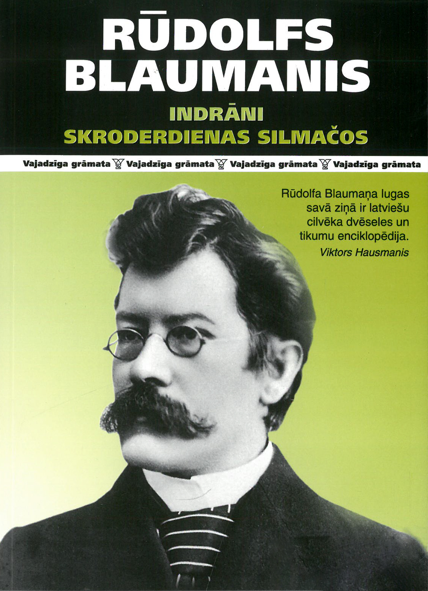
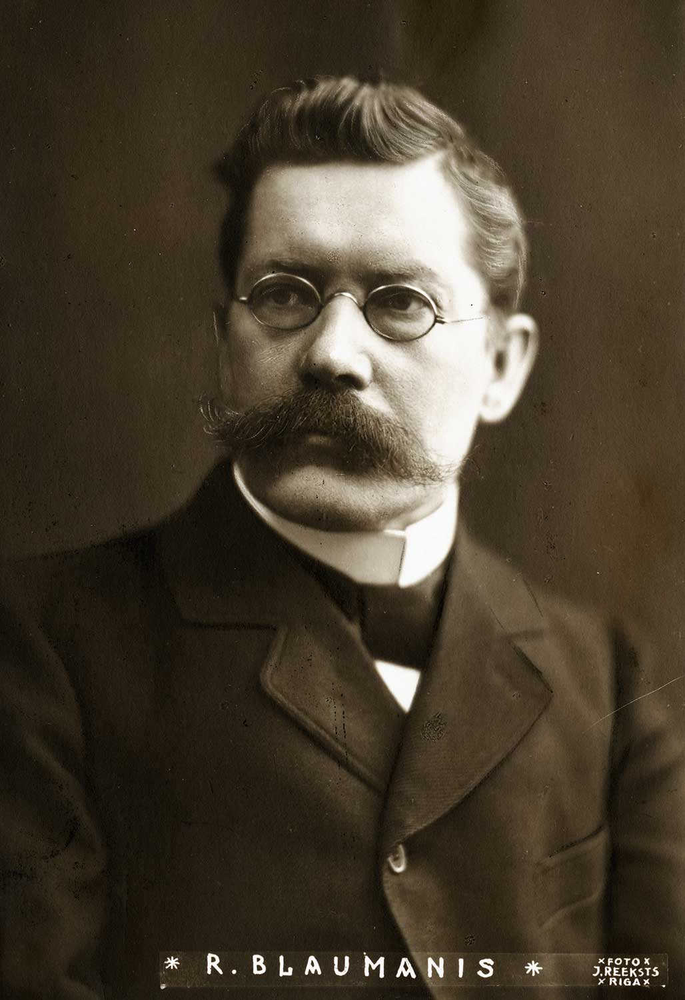
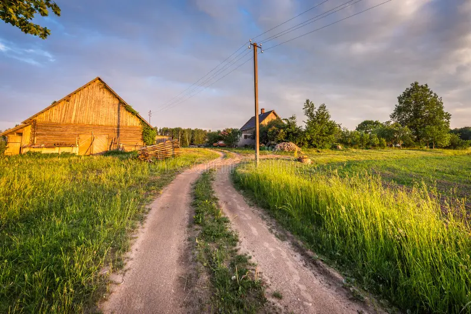
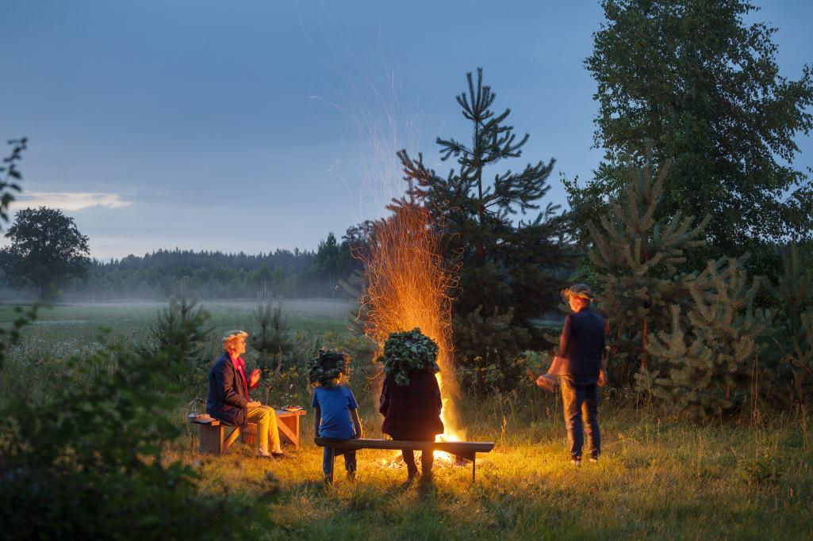
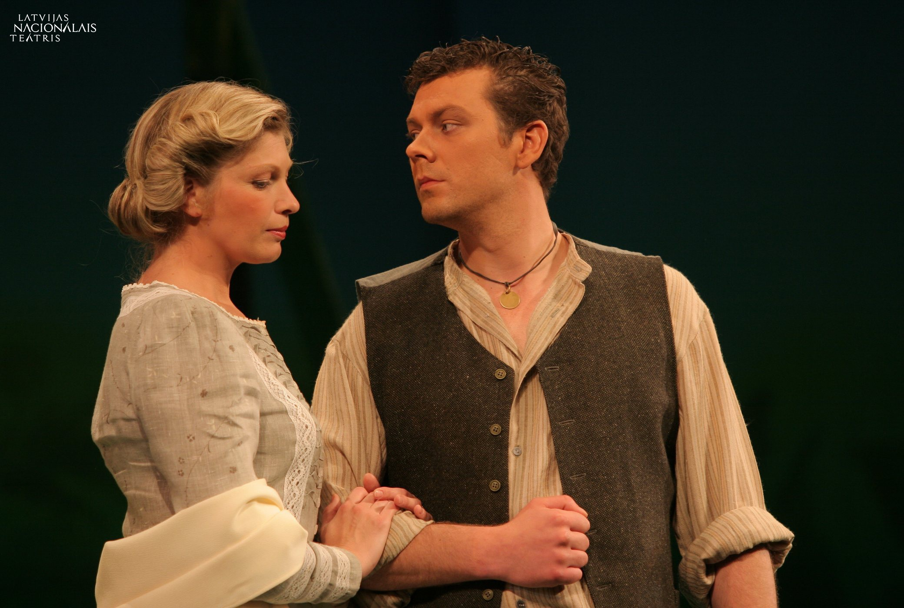

Rūdolfa Blaumaņa komēdija par mīlestību, Jāņiem un dzīvi latviešu sētā

"Skroderdienas Silmačos" ir Rūdolfa Blaumaņa komēdija, kas sarakstīta 1902. gadā un tiek uzskatīta par vienu no nozīmīgākajiem latviešu dramaturģijas darbiem, kurā attēlota dzīve Latvijas laukos Jāņu svinību laikā, parādot cilvēku attiecības, emocijas un dažādus pārpratumus, kas rodas ikdienas dzīvē un svētku laikā, kad sabiedrībā pastiprinās jūtas un konflikti, kā arī tiek atklātas dažādas raksturu īpašības un sociālās attiecības starp cilvēkiem.
Lugas sižets ir veidots ap vienu dienu lauku sētā "Silmači", kur vienlaikus norisinās kāzu gatavošanās, mīlestības attiecības un sadzīviski konflikti, kas rada gan komiskas, gan emocionālas situācijas, parādot cilvēku raksturu daudzveidību un sabiedrības tradīciju nozīmi latviešu kultūrā.
Šis darbs ir kļuvis par latviešu kultūras simbolu un tiek regulāri iestudēts teātros, īpaši Jāņu laikā, jo tas atspoguļo nacionālās tradīcijas un tautas dzīvesveidu.

Rūdolfs Blaumanis (1863–1908) bija viens no nozīmīgākajiem latviešu rakstniekiem un reālisma pārstāvjiem, kurš savos darbos attēloja cilvēku psiholoģiju, attiecības un iekšējos konfliktus, veidojot dziļus un dzīvus tēlus latviešu literatūrā.
Viņš rakstīja par vienkāršiem cilvēkiem, viņu ikdienas dzīvi, problēmām un izvēlēm, parādot, kā emocijas un sabiedrības normas ietekmē cilvēku rīcību.
Blaumanis dzīvoja laikā, kad latviešu literatūra attīstījās kā nacionālās kultūras daļa, tāpēc viņa darbi ir ļoti svarīgi latviešu literatūras vēsturē.
Viņa nozīmīgākie darbi ir "Skroderdienas Silmačos", "Indrāni" un "Purva bridējs".


Darbība notiek lauku sētā "Silmači", kas simbolizē tradicionālo latviešu dzīvesveidu ar ciešu saikni ar dabu, darbu un sezonālajiem svētkiem, īpaši Jāņiem, kas latviešu kultūrā ir viens no svarīgākajiem gadskārtu svētkiem.
Vide lugā nav tikai fiziska vieta, bet arī simbols latviešu dzīvesveidam, kur cilvēku attiecības, tradīcijas un sabiedriskās normas spēlē ļoti svarīgu lomu.
Jāņu svinības ir centrālais notikums, kas apvieno visus tēlus vienā laikā un vietā – ar vainagiem, ugunskuriem un jāņuzālēm.

Antonija
Spēcīga un atbildīga sieviete, kas vada mājsaimniecību. Zināma ar stingru roku, bet patiesi sirdī gādīga un rūpīga.
Saimniecei jābūt stiprai kā ozolam.
Rūdis
Jauns vīrietis, iemīlējies un emocionāls, bieži rīkojas impulsīvi, tomēr viņa jūtas ir patiesas un sirsnīgas līdz pašaizliedzībai.
Sirds liek darīt trakas lietas.
Joske
Viltīgs, asprātīgs tirgotājs, kurš rada komiskas situācijas ar saviem trikiem un nereti kļūst par notikumu virzītājspēku.
Tirgošanās ir māksla.
Šie trīs varoņi atklāj dažādas lugas šķautnes: mīlestību, atbildību un humoru, kas padara "Skroderdienas Silmačos" neaizmirstamu.
01
Mīlestība pārvar materiālās vērtības – pat tad, kad viss šķiet apmulsis, sirds zina īsto ceļu.
02
Pārpratumi veido likteņus – tie var mainīt attiecības, bet laba sirds un piedošana vienmēr uzvar.
03
Tradīcijas vieno sabiedrību – Jāņi kā kopā būšanas spēks, kas saved kopā pat visdažādākos cilvēkus.
04
Cilvēka psiholoģiskā sarežģītība – Blaumanis pat komēdijā ieliek dziļas patiesības par mums pašiem.
05
Nebūt pārāk nopietniem pret sevi – ikdienišķas rūpes un jautrība māca mums smieties par savām kļūdām.
Luga tiek regulāri iestudēta Latvijas teātros – Nacionālajā teātrī, Dailes teātrī un daudzos novadu teātros. Tā ir kļuvusi par neatņemamu Jāņu tradīcijas daļu, bieži spēlēta brīvdabas skatuvēs zem zvaigznēm.
Mūsdienu režisori "Skroderdienas Silmačos" interpretē svaigi, saglabājot autoironiju un tautas garu. Izrādes vienmēr tiek izpārdotas, un skatītāju smiekli liecina par lugas mūžīgo aktualitāti.
Īpaši Jāņu laikā luga tiek spēlēta ar īpašu svinīgumu – ar dziesmām, vainagiem un ugunskura noskaņu.
Šī mājaslapa ir veltīta latviešu literatūras klasikai un aicina iepazīt un atklāt no jauna "Skroderdienas Silmačos" – mūžīgo vasaras saulgriežu stāstu par mīlestību, smiekliem un dzīvesprieku.